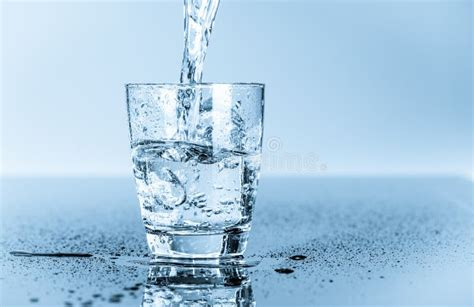
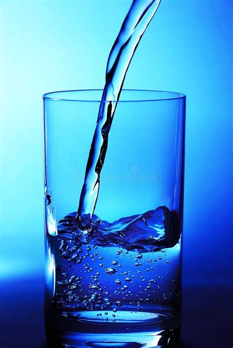
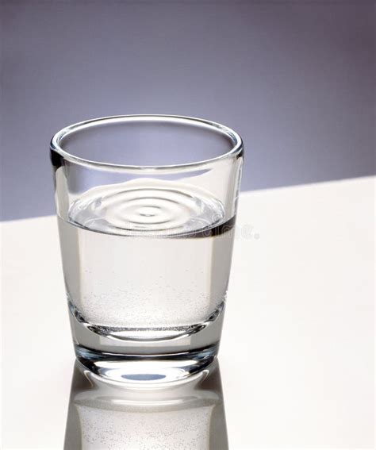

Economisirea apei: Este esențial să evităm risipa de apă, deoarece resursele de apă dulce sunt limitate și esențiale pentru viață.
Protecția surselor de apă: Trebuie să prevenim poluarea apelor prin gestionarea corectă a deșeurilor și a substanțelor chimice.
Accesul egal la apă: Asigurarea accesului la apă potabilă pentru toți oamenii este o responsabilitate globală și un drept fundamental.
